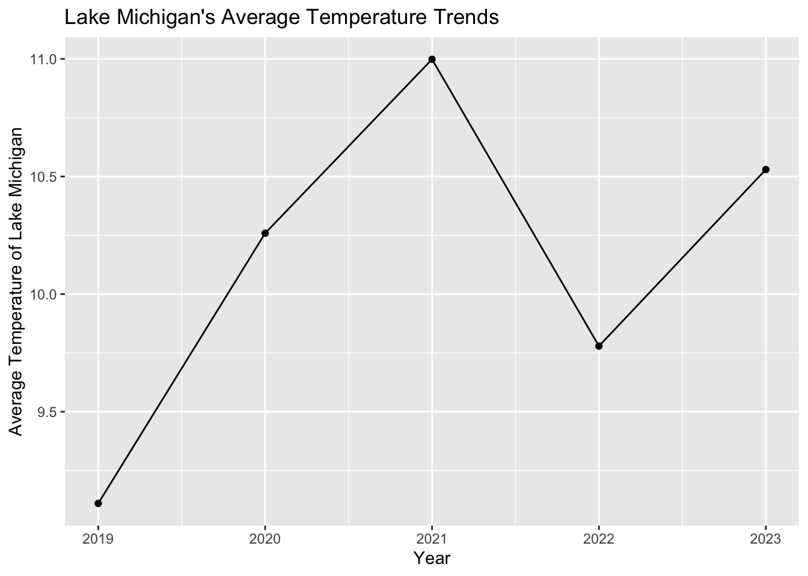
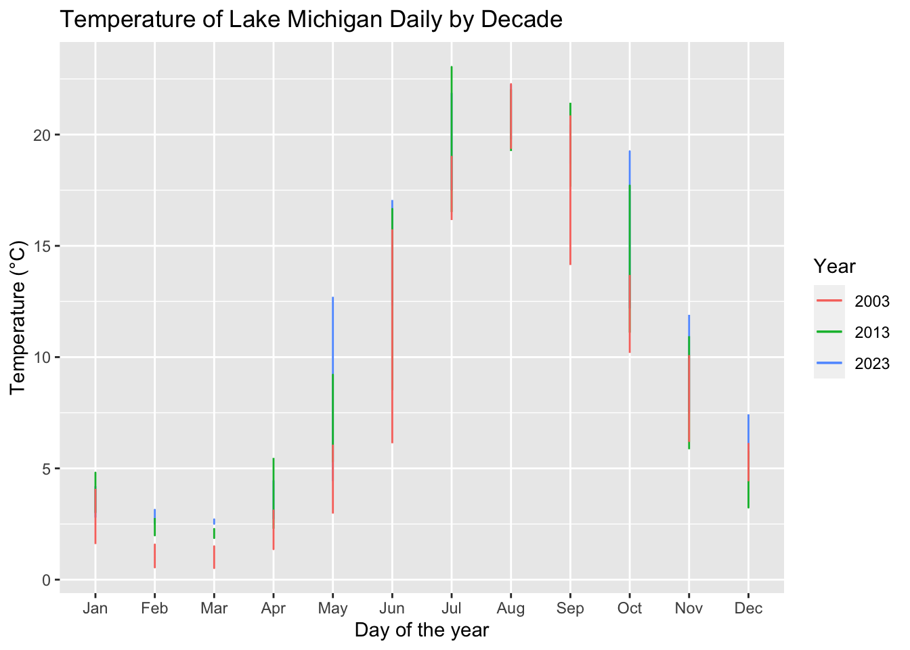
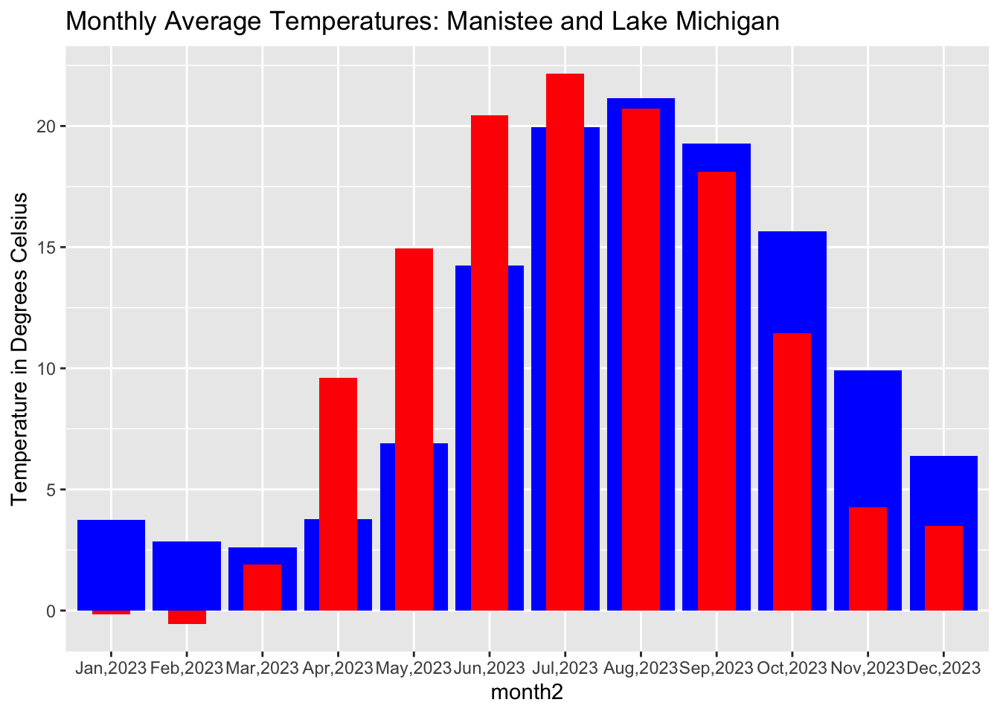

#Milestone_05_Final_Project ##Background The purpose of this project is to analyze the temperature trends of Lake Michigan. The data analysis will focus on the comparison of the last full year (2023),to other years, areas and locations, along with analyzing the year 2023 itself. #Load Libraries
library(tidyverse)
── Attaching core tidyverse packages ──────────────────────── tidyverse 2.0.0 ──
✔ dplyr 1.1.4 ✔ readr 2.1.5
✔ forcats 1.0.0 ✔ stringr 1.5.1
✔ ggplot2 3.4.4 ✔ tibble 3.2.1
✔ lubridate 1.9.3 ✔ tidyr 1.3.1
✔ purrr 1.0.2
── Conflicts ────────────────────────────────────────── tidyverse_conflicts() ──
✖ dplyr::filter() masks stats::filter()
✖ dplyr::lag() masks stats::lag()
ℹ Use the conflicted package (<http://conflicted.r-lib.org/>) to force all conflicts to become errors
library(tidycensus)library(rvest)
Attaching package: 'rvest'
The following object is masked from 'package:readr':
guess_encoding
library(janitor)
Attaching package: 'janitor'
The following objects are masked from 'package:stats':
chisq.test, fisher.test
#Question 1 1. In 2023, were there noticeable differences in the temperature of Lake Michigan compared to temperature differences in the other four great lakes?
#Question 2 2. What 5 days did Lake Michigan have the biggest changes in temperature of 2023?
#Question 3 3.How have the average temperatures of Lake Michigan changed over the past five years?
#Question 4 4. How does 2023’s temperature patterns and changes compare to the patterns of those one and two decades ago (2013 and 2003)?
#Question 5 5. How does Lake Michigan’s temperature compare to the average trends in land temperature of Manistee, MI. Manistee is on the coast of Lake Michigan. (manis temp) in Michigan throughout the 2023 year?
#Load Data from last 5 years
data23 <- rio::import("temp23.txt") %>%clean_names() %>%rename(year="v1", day="v2", Sup.="v3", Mich.="v4", Huron="v5",Erie="v6", Ont.="v7",St.Clr="v8") %>%clean_names()#Add Months to 2023 data23 <- data23 %>%mutate(month =case_when( day %in%1:31~"Jan", day %in%32:60~"Feb", day %in%61:91~"Mar", day %in%92:121~"Apr", day %in%122:152~"May", day %in%153:182~"Jun", day %in%183:212~"Jul", day %in%213:243~"Aug", day %in%244:273~"Sep", day %in%274:304~"Oct", day %in%305:333~"Nov", day %in%334:365~"Dec", ))data22 <- rio::import("temp2022.txt") %>%clean_names() %>%rename(year="v1", day="v2", Sup.="v3", Mich.="v4", Huron="v5",Erie="v6", Ont.="v7",St.Clr="v8") %>%clean_names()data21 <- rio::import("temp2021.txt") %>%clean_names() %>%rename(year="v1", day="v2", Sup.="v3", Mich.="v4", Huron="v5",Erie="v6", Ont.="v7",St.Clr="v8") %>%clean_names()data20 <- rio::import("temp2020.txt") %>%clean_names() %>%rename(year="v1", day="v2", Sup.="v3", Mich.="v4", Huron="v5",Erie="v6", Ont.="v7",St.Clr="v8") %>%clean_names()data19 <- rio::import("temp2019.txt") %>%clean_names() %>%rename(year="v1", day="v2", Sup.="v3", Mich.="v4", Huron="v5",Erie="v6", Ont.="v7",St.Clr="v8") %>% clean_names
#Load Data from 2013 and 2003
data13 <- rio::import("temp2013.txt") %>%clean_names() %>%rename(year="v1", day="v2", Sup.="v3", Mich.="v4", Huron="v5",Erie="v6", Ont.="v7",St.Clr="v8") %>%clean_names()#Add Months to 2013 data13 <- data13 %>%mutate(month =case_when( day %in%1:31~"Jan", day %in%32:60~"Feb", day %in%61:91~"Mar", day %in%92:121~"Apr", day %in%122:152~"May", day %in%153:182~"Jun", day %in%183:212~"Jul", day %in%213:243~"Aug", day %in%244:273~"Sep", day %in%274:304~"Oct", day %in%305:333~"Nov", day %in%334:365~"Dec", )) data03 <- rio::import("temp2003.txt") %>%clean_names() %>%rename(year="v1", day="v2", Sup.="v3", Mich.="v4", Huron="v5",Erie="v6", Ont.="v7",St.Clr="v8") %>%clean_names()#Add Months to 2003 data03 <- data03 %>%mutate(month =case_when( day %in%1:31~"Jan", day %in%32:60~"Feb", day %in%61:91~"Mar", day %in%92:121~"Apr", day %in%122:152~"May", day %in%153:182~"Jun", day %in%183:212~"Jul", day %in%213:243~"Aug", day %in%244:273~"Sep", day %in%274:304~"Oct", day %in%305:333~"Nov", day %in%334:365~"Dec", ))
#Load Average Temperatures of Manistee, Michigan in 2023
manis_temp <-read_excel("manis_temp.xltx")
#Question 1 In 2023, were there noticeable differences in the average temperature of Lake Michigan compared to temperature differences in the other four great lakes?
#Upload Data 23's months #Add Months to 2023 data23 <- data23 %>%mutate(month =case_when( day %in%1:31~"Jan", day %in%32:60~"Feb", day %in%61:91~"Mar", day %in%92:121~"Apr", day %in%122:152~"May", day %in%153:182~"Jun", day %in%183:212~"Jul", day %in%213:243~"Aug", day %in%244:273~"Sep", day %in%274:304~"Oct", day %in%305:333~"Nov", day %in%334:365~"Dec", ))
#Observations Lake Michigan was recorded on average lower temperatures (10.53 degrees Celsius average ) than every lake except Lakes Huron (9.80 Celsius) and Superior(6.89 Celsius). Lake Superior is North of Lake Michigan, so expected to be at a cooler temperature. Lake Huron is North-East of Lake Michigan, and isn’t as large, so most likely cools faster.
#Link to Data https://coastwatch.glerl.noaa.gov/statistics/average-surface-water-temperature-glsea/ -> Home Page https://apps.glerl.noaa.gov/coastwatch/ftp/glsea/avgtemps/2023/glsea-temps2023_1024_3.dat ->Set Used
#Question 2 What 5 days did Lake Michigan have the biggest changes in temperature of 2023?
#Observations The 5 biggest changes in temperature for 2023 were all increases in temperature. The largest change was day 149 (May), increasing by 1.09 degrees. This was followed by day 150 (May) at 1.06 degrees, day 151 (May) at 0.89 degrees, day 153 (June) at 0.80 degrees. The fifth biggest increase was on day 152 (May), 154 (June) and 182 (June), which they all increased by 0.69 degrees. The biggest decrease was on day 158 (June), by -0.58. Days 150-160 of 2023 ranged from May 30th to June 8th. This is when the temperatures start to increase in the air by a significant amount as Summer approached, so it is reasonable to expect a correlation to how the temperatures of the water are changing. This code selects the year 2023, all 365 days and solely selects Lake Michigan, which the question is focusing on. Then, it figures out the difference between one row to the next. I arranged it by day and the difference in temperature, so it would know to arrange the difference in rows based on the difference in temperature (temp_diff) by day. Then, I arranged it descending, so that the biggest increases would appear at the top, and biggest decreases appeared at the bottom. However, the top 5 biggest changes were all increases.
#Link to Data https://coastwatch.glerl.noaa.gov/statistics/average-surface-water-temperature-glsea/ -> Home Page https://apps.glerl.noaa.gov/coastwatch/ftp/glsea/avgtemps/2023/glsea-temps2023_1024_3.dat ->Set Used
#Question 3 How have the average temperatures of Lake Michigan changed over the past five years?
#Calculate the average Temperature for each year, and get rid of 2024year_avg <-bind_rows(data19, data20, data21, data22, data23) %>%group_by(year) %>%summarise(year_avg =mean(mich))#Make a plotggplot(year_avg, aes(x = year, y = year_avg)) +geom_line() +geom_point() +labs(x ="Year", y ="Average Temperature of Lake Michigan", title ="Lake Michigan's Average Temperature Trends")

#Observations There was an upwards trend in Lake Michigan’s temperature from 2019 to 2021, with a decrease in 2022. However, the rise in temperatures in 2023 was significant. Just the difference between 2022 and 2023 rose from approximately 9.7 degrees Celsius to approximately 10.6 degrees Celsius.
#Data Used #Link to Data https://coastwatch.glerl.noaa.gov/statistics/average-surface-water-temperature-glsea/ -> Home Page https://apps.glerl.noaa.gov/coastwatch/ftp/glsea/avgtemps/2023/glsea-temps2023_1024_3.dat https://apps.glerl.noaa.gov/coastwatch/ftp/glsea/avgtemps/2022/glsea-temps2022_1024.dat https://apps.glerl.noaa.gov/coastwatch/ftp/glsea/avgtemps/2021/glsea-temps2021_1024.dat https://apps.glerl.noaa.gov/coastwatch/ftp/glsea/avgtemps/2020/glsea-temps2020_1024.dat https://apps.glerl.noaa.gov/coastwatch/ftp/glsea/avgtemps/2019/glsea-temps2019_1024.dat ->Sets Used
#Question 4 How does 2023’s temperature patterns and changes compare to the patterns of those one and two decades ago (2013 and 2003)?
# Select datadata23_select <-select(data23, year, day, month, mich)data13_select <-select(data13, year, day, month, mich)data03_select <-select(data03, year, day, month, mich)# Filter data for 365 days of each year (since none were leap)data23_all_days <-filter(data23_select, day <=365)data13_all_days <-filter(data13_select, day <=365)data03_all_days <-filter(data03_select, day <=365)#Assigndata23_all_days$month <-factor(data23_all_days$month, levels=c("Jan", "Feb", "Mar", "Apr", "May", "Jun", "Jul", "Aug", "Sep", "Oct", "Nov", "Dec"))data13_all_days$month <-factor(data13_all_days$month, levels=c("Jan", "Feb", "Mar", "Apr", "May", "Jun", "Jul", "Aug", "Sep", "Oct", "Nov", "Dec"))data03_all_days$month <-factor(data03_all_days$month, levels=c("Jan", "Feb", "Mar", "Apr", "May", "Jun", "Jul", "Aug", "Sep", "Oct", "Nov", "Dec"))# Plotggplot() +geom_line(data = data23_all_days, aes(x = month, y = mich, color ="2023")) +geom_line(data = data13_all_days, aes(x = month, y = mich, color ="2013")) +geom_line(data = data03_all_days, aes(x = month, y = mich, color ="2003")) +labs(x ="Day of the year", y ="Temperature (°C)", color ="Year",title ="Temperature of Lake Michigan Daily by Decade")

The temperature of Lake Michigan stayed consistent with trends over the last two decades. However, 2013 had a jump in temperature between April and June. 2023 has this jump much earlier, from March to May. While 2003 did not have a drastic jump in temperature. As displayed, the 2023 temperature line is higher than the other lines towards the end of the year. The 2003 line is also visibly the lowest line for most of the year. This means that over the last two decades, the temperature of Lake Michigan has slowly increased.
#Question 5 How does Lake Michigan’s temperature compare to the average trends in land temperature of Manistee, MI. Manistee is on the coast of Lake Michigan. (manis temp) in Michigan throughout the 2023 year?
#Find the Monthly average for data23monthly_avg_mich <- data23 %>%group_by(month) %>%summarize(avg_temp =mean(mich, na.rm =TRUE))#Flip Manistee table to horizontalmanis_temp1 <- manis_temp %>%pivot_longer(names_to ="month",values_to="temp",cols=2:13) %>%mutate(celsius=(temp-32)/1.8)
#Merge the Datamerged_data <-merge(monthly_avg_mich, manis_temp1, by ="month", all =TRUE) %>%mutate(month2=paste(month,"2023",sep=","))#Make a Bar Chartmerged_data$avg_temp <-as.numeric(merged_data$avg_temp)merged_data$temp <-as.numeric(merged_data$temp) merged_data$avg_temp <-round(merged_data$avg_temp, 2)merged_data$temp <-round(merged_data$temp, 2)# Convert Month 2 to a Factormerged_data$month2 <-factor(merged_data$month2, levels =c("Jan,2023", "Feb,2023", "Mar,2023", "Apr,2023", "May,2023", "Jun,2023", "Jul,2023", "Aug,2023", "Sep,2023", "Oct,2023", "Nov,2023", "Dec,2023"))#Plottingggplot(merged_data, aes(x = month2)) +geom_bar(aes(y = avg_temp), stat ="identity", fill ="blue", position =position_dodge(width =0.9)) +geom_bar(aes(y = celsius), stat ="identity", fill ="red", position =position_dodge(width =0.9), width =0.5) +labs(title ="Monthly Average Temperatures: Manistee and Lake Michigan",y ="Temperature in Degrees Celsius", color ="Dataset")

#Answer This visual concluded that the air temperatures cooled and rose at a much faster pace than the water. In the months March-May, you see that the red (air temperatures) is increasing much faster than the blue (water temperatures). However, from September to October, the drop in air temperature is very significant, but Lake Michigan had a minimal drop in temperature. This code provided a clear visual that the water cools down faster than the air.
#Link to Data https://coastwatch.glerl.noaa.gov/statistics/average-surface-water-temperature-glsea/ -> Home Page https://apps.glerl.noaa.gov/coastwatch/ftp/glsea/avgtemps/2023/glsea-temps2023_1024_3.dat ->Set Used https://www.weather.gov/wrh/Climate?wfo=apx - Manistee Temperatures
#Memo The analysis of Lake Michigan’s temperature trends for the year 2023, along with comparisons data from land temperatures Manistee, MI (one of its main coastal city’s), revealed several findings. First, Lake Michigan displayed differences in average temperature compared to other Great Lakes, with higher temperatures than Lakes Huron and Superior but lower than Lakes Erie and Ontario. Temperature changes throughout 2023 had significant increases primarily occurring between May and June, reflecting on the transition to summer. Further, examining temperature trends over the past five years showed a general upward pattern from 2019 to 2021, followed by a pronounced rise in 2023. However, the year 2022 had a decrease, which is different than the trend. Comparisons with data from 2013 and 2003 highlighted consistent trends of increasing temperatures over the past two decades, with 2023 increasing earlier and more pronounced temperature spikes. Lastly, the comparison between Lake Michigan’s temperatures and Manistee, MI’s land temperatures showed the difference in temperature changes between air and water, emphasizing the slower rate of change in water temperatures. These findings showed the general trends and comparison in the Great Lakes region, while focusing on Lake Michigan, informing further research and understanding of the interactions between climate and large bodies of water.